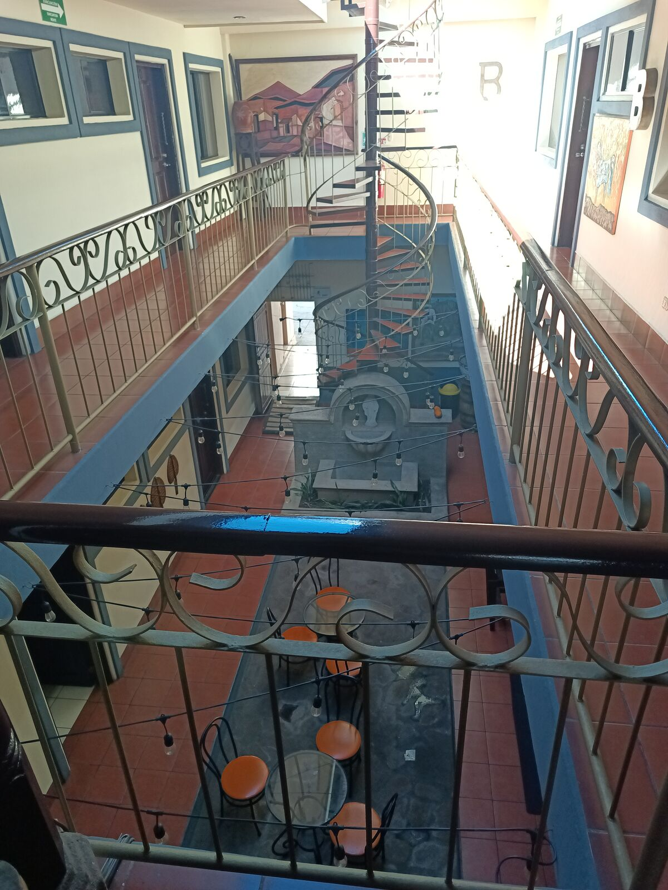
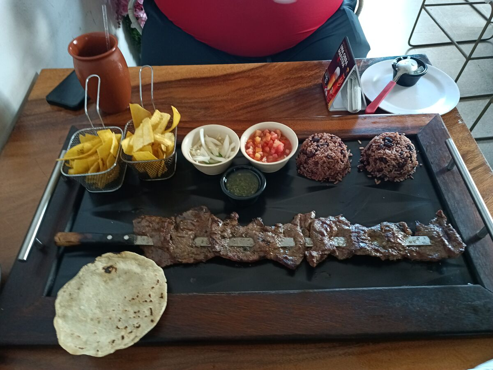
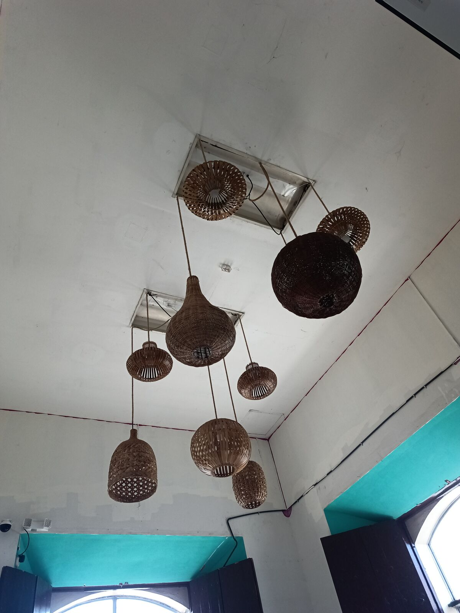
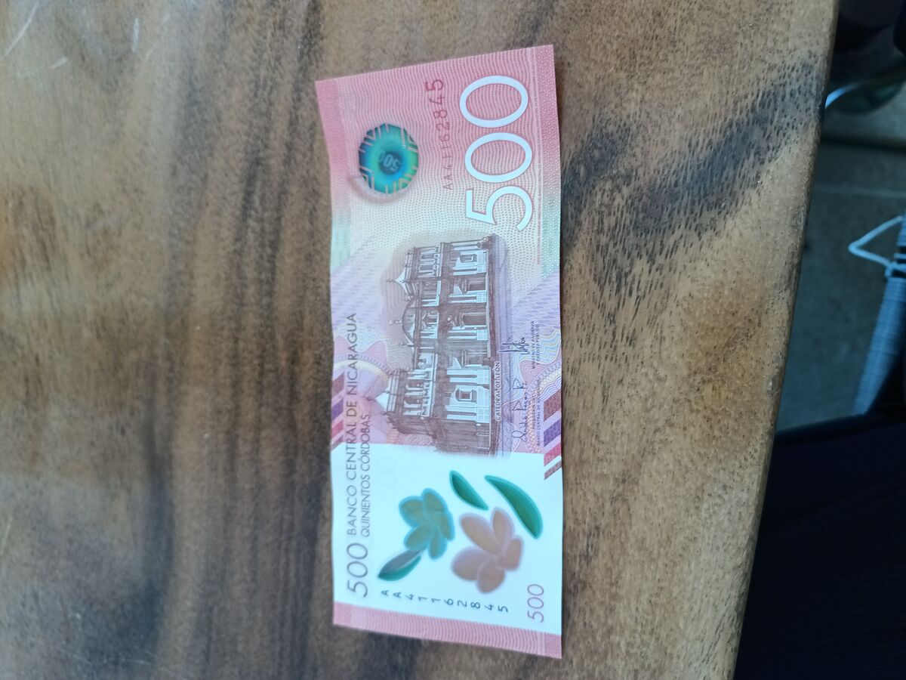
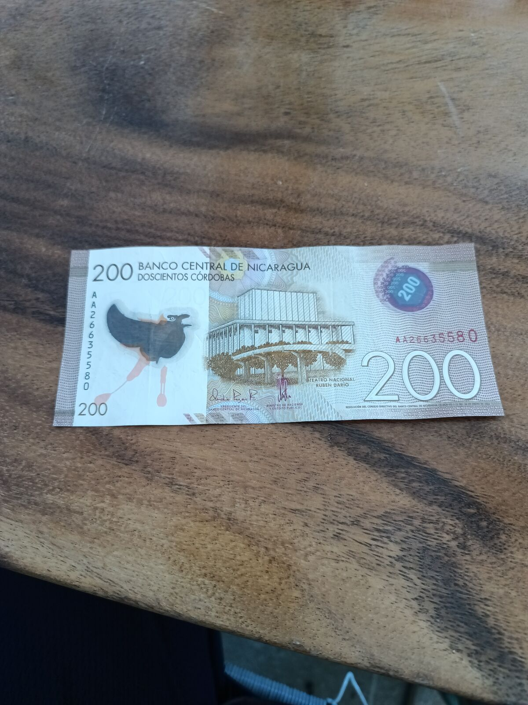
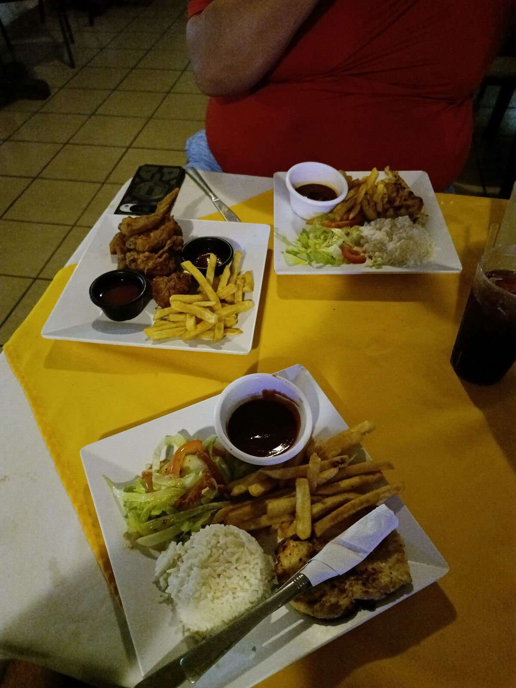

即兴发挥，栽了跟头
真该死，我竟然以为整个中美洲都一样。现实是：在别的国家，事情运转正常，人们真的遵守规则。不管出于什么原因，反正他们遵守。
最让我沮丧的事情之一，是开在这些中美洲国家的公路上——在危地马拉人眼里，它们总该比我们的差——却发现：当一个政府、一个国家不把基础设施和公路丢在一边不管时，受益的不只是本国，还有外国投资。可在危地马拉，大家只在乎眼前：如果我 9 点出门上班，我才不管堵车，因为高峰已经过了，或者我晚点出门就避开了。早上出门的人跟我无关，因为堵的不是我。真该死，我们这种隧道视野，这种只看本地的眼光，还有我们在危地马拉过着的这种自私。
你们不知道，看到比克萨尔特南戈（Xela）更小、却有更好的基础设施、更好的发展、更有秩序的城市，我有多难受。完全没法比，一点都没法比。而在危地马拉，我们以 Xela 为傲，我第一个骄傲。可我再一次意识到，我们已经习惯了平庸，还为那些勉强称得上城市的地方鼓掌。萨尔瓦多东部有一座公路漂亮极了的城市，而我们有奇基穆拉（Chiquimula），只有一个购物中心，大概连电梯都没有。我突然想起来，哈哈，几年前还有报道说托托尼卡潘（Totonicapán）装了第一部电梯。真是的，哈哈哈哈。
不过，发泄完这些，我们从奇南德加出发去莱昂（León），一座美丽的城市。路上遇到一个警察检查站，他们很客气地告诉我们，还缺一份人人都必须有的保险。我心想：“哇，这正是危地马拉曾经想推行的东西。”可在我们那里，跟其他事一样，我们安于平庸，什么都不想要；当局一向软弱，因为保住权力永远比公共利益重要。

警察先生让我下车，向我解释这个国家怎么运作：最好遵守规则，车速不要超过每小时 50 公里，因为罚款很高；最重要的是，他们会扣下驾照，让你去交罚款。那时我已经害怕得快哭了，因为我又在即兴发挥，又是因为不了解，可这次我是成年人，还在别的国家，不知道法律可不是借口。我们聊了聊，他给了我机会去下一个城市找保险公司。他只说：“今天是周日，明天是节假日，我看挺难。我劝你别没买这份保险就上路，不然他们会扣你的驾照。”我心想：他们完全有权这么做，虽然从来没人告诉过我们必须买这份保险。还要更正一下：第 6 天我跟大家说我们在边境买了保险。结果发现我们交的是车辆消毒费，哈哈哈，根本不是保险。可见人都会犯错。
我们到了莱昂，按他们要求的速度开，花了将近两个小时，哈哈哈哈。我们去了一个购物中心，全关着；又去了中央公园，还是全关着。这时我才明白，和 Xela 一样，周日和节假日几乎什么都不开。直到 José 的一个朋友救了我们，给了我们一位周日也营业的女士的联系方式。
知道自己把事情做错了，我总会很难受，因为这些本来可以避免。我不想吃饭，情绪很低落，那个念头又冒出来：你不在自己的国家。要是驾照被扣，反正你身上也没现金，而我们不能耽误太久：晚一天就多花一天的钱，计划也会被打乱，不只是我的，还有 José 的，以及所有我们要去见的人的。
最后我们吃了烤肉串，超级好吃。我没拍莱昂老城区的照片，那里大概有一千座教堂，哈哈哈。这里放一张地图，大家可以看看。

我忘了说的一件事，也是照片里有钞票的原因：我们在一家叫 La Basílica 的餐厅吃午饭，它果然就在大教堂（Basílica）附近，哈哈哈哈。我们问能不能刷卡，他们说可以。等菜上来了，他们又说没有刷卡机，只能付现金或转账，哈哈。我们到处转，找到一家 BAC 银行网点，关着门，还有一家 LAFISE，我从没听说过这家银行。我走了大约 4 个街区去 BAC 的取款机，结果取不出钱，又去了 LAFISE，总算取了大约 2,000 科尔多瓦……手续费却收了 10 美元。所以给大家一个建议：一次多取一些，摊下来手续费更少；或者找一台和你的卡兼容的取款机，就不用付手续费了。



吃完我们又迷路了，哈哈，因为 Waze 想带我们去哪就去哪，只有老天爷和地图知道我们在哪。我们终于到了开保险凭证的地方，付了钱，放心地继续上路，希望别再被拦，哈哈，不过这回手续齐全了。然后我们开始查进哥斯达黎加要办什么，结果是一样的流程：车辆消毒、缴纳车辆强制保险，以及登记随身携带的物品。
从莱昂到马那瓜，我得说：公路好得不可思议。有一片美丽的平原，José 在那儿骑了车。我们在进步，看这条曲线挺有意思：一开始骑得多，后来少了，现在每天都在增加。这趟旅行经历的一切，再一次让人惊叹。
我们现在这样配合：José 先骑 10 分钟左右，然后我开车追上他、超过他，往前开几公里；接着他再超过我，就这样交替前进。可最后一次超车时没地方停车，我一下子开出去好远，将近 10 公里，哈哈。结果 José 一公里不落地全骑完了：总共骑了大约 10 到 15 公里。我真为他骄傲。
我们沿着又一条宽阔、干净、有秩序的公路到了马那瓜，人们开车速度合理，就算不是所有标志都遵守，也遵守了大部分。没有堵车，一路畅通。
找酒店的时候，我觉得那条街很眼熟，原来 2019 年我们就住过这家酒店，挺漂亮也挺舒服。3 晚 70 美元，有泳池，含自助早餐。很不错。
说实话，忙乱了一整天，泡进泳池让我慢慢平静下来。我们和 José 一起吃了饭，早早去休息。我们都累了，因为累的不只是骑车或开车，而是意识到我们不在危地马拉，任何一点小差错都可能付出更大的代价。

有人曾对我说：“你们旅行是为了躲开压力吧。”我心想：我们现在做的事情，比躺在家里、和家人在一起、有饭吃、有房住、有网络、什么都不缺，压力大多了。其实没必要出来，但确实有必要动起来，继续成为最好的自己。
我还发现，我想在房间里放一张特大号床。哪怕我接下来要住的地方根本放不下，我也想要，而且一定会买，哈哈。即使几乎用不上，因为我已经看出来，接下来几个月、几年我会经常旅行，我还是想要，因为能有那么大的空间多好啊。
我一直在想很多事，把它们放进更大的视角里，也反复思考自己做事的方式，不过这些我过几天再跟你们说。真不敢相信，我们已经离开祖国一个星期了，完成着一个几乎是开玩笑定下的挑战，而且我们俩谁都没被吓退。我们就在这里，全心投入。很欣慰的是，我有一个同样甚至更有动力、更投入这个想法的伙伴，他也同样梦想让事情运转起来。终于不再只有我一个人在带头：我们轮流解决问题、轮流带队，这让一切更好了。
希望这篇不算太激烈，但我确实对这一切感到愤怒：看到我们危地马拉躺在功劳簿上，骄傲地活在过去的影子里，而别人已经超过了我们。问题不在于有更好的国家，而在于有人骗我们说我们是最好的，好让我们一直这样平庸下去。下一篇博客见。爱你们。
👆 点击地图上的任意一个点，即可阅读当天的章节。